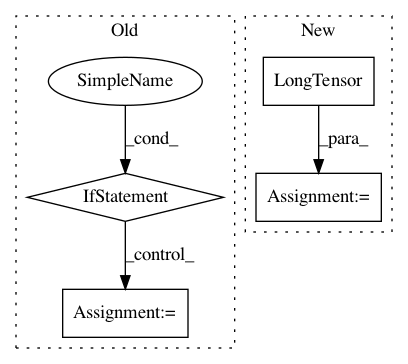

6ddf825a4aa1bcf3a35bba8d36bc433fe5ebaa39,torchsample/utils.py,,th_nearest_interp_3d,#Any#Any#,285
Before Change
2d nearest neighbor interpolation torch.Tensor
// repeat coords along channel dim if not given that way
if coords.dim() == 2:
coords = coords.unsqueeze(0).repeat(input.size(0),1,1)
// take clamp of coords so they"re in the image bounds
xc = torch.clamp(coords[:,:,0], 0, input.size(1)-1)
yc = torch.clamp(coords[:,:,1], 0, input.size(2)-1)
zc = torch.clamp(coords[:,:,2], 0, input.size(3)-1)
After Change
coords[:,1] = torch.clamp(coords[:,1], 0, input.size(2)-1).round()
coords[:,2] = torch.clamp(coords[:,2], 0, input.size(3)-1).round()
stride = torch.LongTensor(input.stride())[1:].float()
idx = coords.mv(stride)
input_flat = th_flatten(input)
mapped_vals = input_flat[idx.long()]
return mapped_vals.view_as(input)
In pattern: SUPERPATTERN
Frequency: 4
Non-data size: 4
Instances
Project Name: ncullen93/torchsample
Commit Name: 6ddf825a4aa1bcf3a35bba8d36bc433fe5ebaa39
Time: 2017-04-24
Author: ncullen@Nicks-MacBook-Pro.local
File Name: torchsample/utils.py
Class Name:
Method Name: th_nearest_interp_3d
Project Name: ncullen93/torchsample
Commit Name: 914192dda940237aaf47130e5511bb929cd776b7
Time: 2017-04-23
Author: ncullen@Nicks-MacBook-Pro.local
File Name: torchsample/utils.py
Class Name:
Method Name: th_gather_nd
Project Name: dnouri/skorch
Commit Name: a7cd7a15a9baf741f2b4fcd32f3d8055827889b5
Time: 2017-08-08
Author: marian.tietz@ottogroup.com
File Name: examples/word_language_model/generate.py
Class Name:
Method Name:
Project Name: OpenNMT/OpenNMT-py
Commit Name: 2e90375960c8f10072bbf078e571735f846a2e57
Time: 2018-03-27
Author: s.gehrmann@outlook.com
File Name: onmt/translate/Translator.py
Class Name: Translator
Method Name: __init__